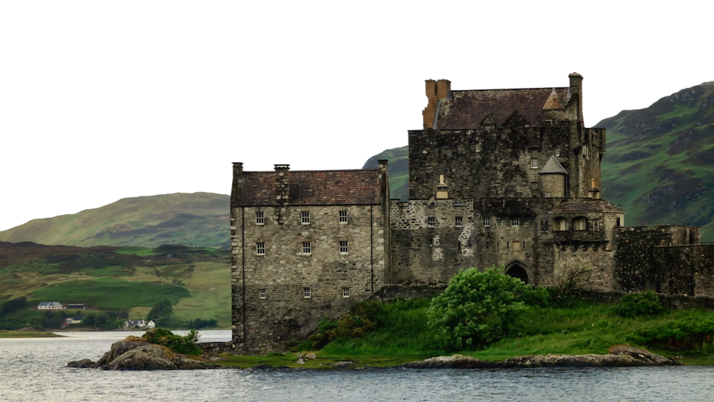

Lochquarry Outdoor Centre is set in acres of land in the heart of the majestic Argyll hills. On our doorstep is not only magnificent scenery, but also a breath-taking selection of outdoor and adventurous activities. With activities designed to meet the needs of all ages and experiences of young people, Lochquarry truly brings adventure to everyone.
Our activities are very popular with youth groups including Scouts and Guides.
To book your next adventure at Lochquarry, please phone 01475 229 8311.
Our activities are very popular with youth groups including Scouts and Guides.
To book your next adventure at Lochquarry, please phone 01475 229 8311.
